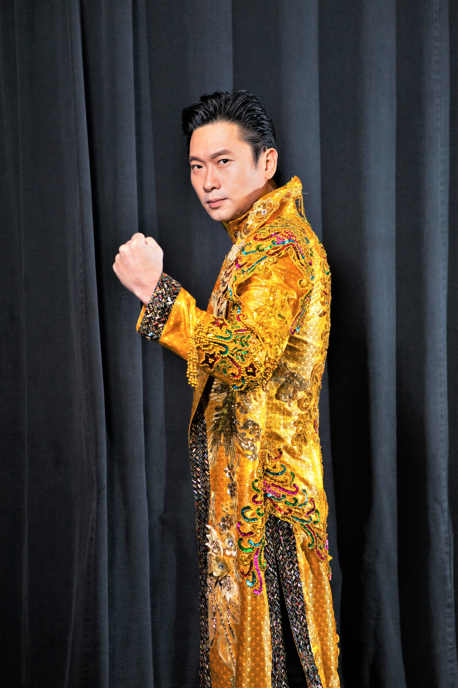
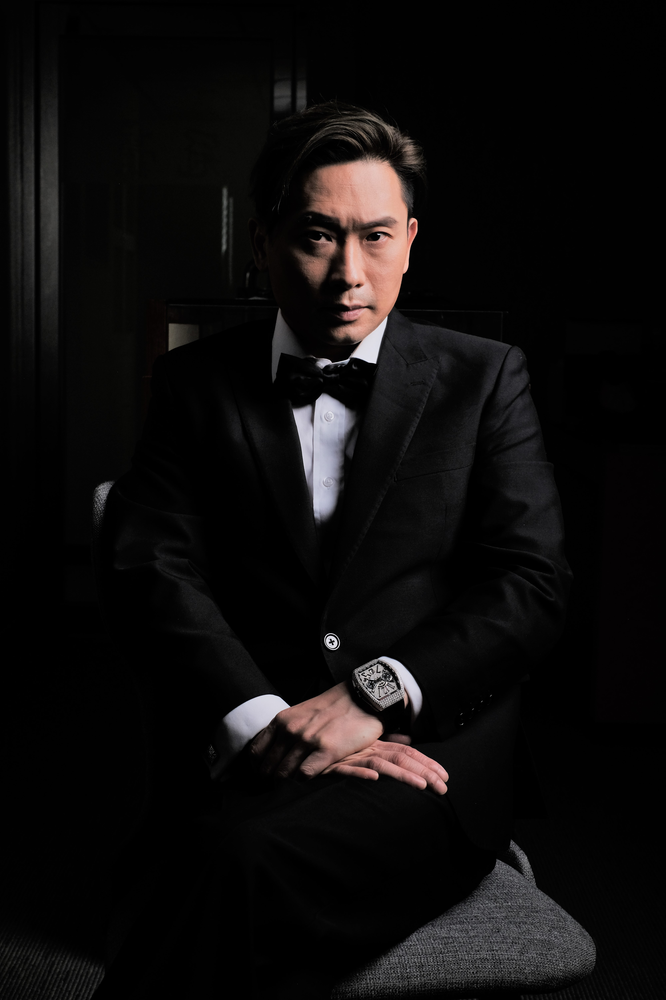

簡歷:
1996-1998香港及國際拳王(126-130磅組別)
2002年至今香港泰拳理事員創會會員之一(高級拳證、裁判及高級教練)
2004年金葉專業泰拳健體中心創辦人
2009獲得King of the Ring世界聯盟總會(全球最佳拳賽推廣人 亞軍)
2016獲得《全球華人傑出青年》
2016獲得I-1世界泰拳獲得《香港最受歡迎品牌》
2017獲得《傑出人物》 同時為傑出人物立傳
2017獲得薪火傳承獎
2018最具影響力品牌大獎
2020年 我是帶貨王(湖南衛視)「最具特式帶貨王」
2020年 AEG鑽石全方位歌手奘
2021年 AEG鑽石躍進歌手奘
葉文龍師傅個人簡介 :
1990年開始接觸武術，在於1992年在林文學師傅的啟發轉打在擂台上最實在泰拳，而葉師傅的拳賽生涯亦告開始了。 從1992年起，葉師傅便以新秀新份開始踏足擂台，1996年勇奪香港拳王寶座，這段段日子接受無數國外拳王挑戰，親身到泰國受訓兩年多，於這數年間，他在擂台上出戰了30場職業大賽(勝28負2)，此外，業餘賽更有全勝不敗的佳績，後期更遠赴荷蘭特訓。
1998年連奪三屆香港及國際拳王後，為培育下一代拳手，葉師傅宣佈退下擂台。同年任職迪暉拳館總教練，曾教授出多位名將，亦曾教授出香港第一批華人長註於泰國的全職業拳師，亦在泰國當地著名拳會Sor-Vorapin當教練，教授當地及外地職業拳手。
2004年11月11日創辦了金葉泰拳健體中心及金葉制作室，同年亦創立了第一個泰拳禁毒賽會，籍搏擊運動，推廣青少年多做運動，遠離不良嗜好!
2005年12月10日創立了I-1賽會為史上首次在香港舉行的國際性泰拳淘汰賽。
I-1由2005年12月10日創立了I-1賽會為史上首次在香港舉行的國際性泰拳淘汰賽。
I-1由2005年開始推廣至世界各地，每年亦收到不少國外拳手的自薦，I-1賽會一直以嚴緊及認真的態度挑選拳手，分別以選手的經驗、名氣、排名、戰鬥力、心理質素、比賽狀態等，鑑證選手的參賽資格，在具競爭性而公平競賽環境下決出世界拳王，務求標榜四個「I」—無敵、智慧、跨越洲際及跨越國界的真正意義。
2006年I-1賽會推廣致八十個國家，成為國際泰拳界的名牌，公認為香港最頂級拳賽搞手，同年成為世界泰拳禁毒委員會─執行委員會香港代表。
2007年I-1賽會成為全球最著名而最受重視的國際性大型泰拳賽會，I-1吸引了各國地的世界級泰拳手渴望參與，I-1當局因而經常收到不少世界級拳手的自薦信、影帶及影碟。
2008年葉師傅成功在歐洲、泰國舉辦I-1賽會、演變成泰拳大使，不斷接受海外電視臺及傳媒問。
2009年葉師傅被TVB電視台邀擔任為(香港力量)節目嘉賓，以自身經歷勉勵港人，為港人打氣，增強香港力量! I-1賽事轉播於TVB翡翠台及高清台，同年成功首次在澳門新濠天地君悅酒店舉辦I-1賽會。
2010年被世界泰拳理事會封稱為頂級拳賽推廣人
2011年葉師傅接受邀請為世界踢拳總會大中華代表會長
2016年 宣報I-1成為全世界歷史最久的泰拳淘汰賽會及唯一最具生命力及延續性的泰拳搏擊賽會
2016年 成功把I-1世界泰拳賽拳帶入中國
2016年10月 {養生之道} 首次單曲為慈善而唱，關愛長輩們共同歡樂，宣揚正能量。
2017年獲得 (全球華人傑出青年)
2017年1月7日「五鼠運財象神」高三米金身於泰國華欣屈朗既佛廟開光, 成為華欣旅遊景點！ 葉文龍先生，千禧年起信仰象神，2015年立願立像供奉，直至2016年3月，終得象神感召開展籌備工作。在葉先生號召下，一呼百應，逾350位善信
2017年獲得 (傑出人物) 2016年度奘，同時為傑出人物立傳，在中港澳台多個知名學府，圖書館收藏，載入史冊。
2017年4月立願為華欣象神興建廟宇，令佛像不受鳥糞塗鴉，並於5月動工。
2017年4月21日 I-1世界泰拳獲得《香港最受歡迎品牌》
2017年6月 I-1世界泰拳賽會被中國統計數據成為中國A級賽事。
香港著名電影金馬編劇阮繼志，把葉文龍師傅人生故事改編寫勵志電影「金袍拳王」，內容講述Kim到片場當臨記遇上真正高手，遍尋名師學藝，學有所成後當上職業拳手，當中有喜有悲賺人熱淚，如何由一個死硬派，遠赴他鄉找尋真愛，最後終於當上金袍拳王的故事
2020年8月22日電影及歌曲派台，正式為藝人身份。
其後更有作品
電影演出：
《金袍拳王》《100分女人》
微電影導演作品：《悟》
MV導演作品：《點火》All For One《裂痕》All For One
歌曲：《養生之道》《一生自豪》《回望》《備戰》國語《一頁傳奇》
《灣區星陣賀新歲》賀年歌